车道线检测（lane_detection）
基于 OpenCV 的 Carla 场景车道线检测模块，分步完成预处理、边缘检测、霍夫直线检测与 HSV 多车道拟合。
作者：ultra223
课题进度：3/10（步骤1 基础检测 + 步骤2 HSV 优化 + 步骤3 透视变换+多项式拟合）
课题进度：2/10（步骤1 基础检测 + 步骤2 HSV 优化）
模块结构
| 文件 | 说明 |
|---|---|
main.py |
唯一入口，运行整个模块 |
config.py |
路径与算法参数 |
lane_preprocess.py |
步骤1：灰度、Canny、ROI、霍夫 |
lane_detect.py |
步骤2：HSV 黄白线、双黄线中心轴、左右车道 |
lane_advanced.py |
步骤3：透视变换、滑动窗口、二次多项式拟合 |
carla_test.jpg |
少量示例输入（运行依赖） |
开发环境
- Python 3.8+
- OpenCV-Python、NumPy
pip install opencv-python numpy -i https://pypi.tuna.tsinghua.edu.cn/simple
运行方式
在仓库根目录或模块目录下执行：
cd src/lane_detection
python main.py
# 步骤2：HSV 多车道检测
python main.py --mode hsv
# 步骤3：透视变换 + 滑动窗口 + 多项式拟合
python main.py --mode advanced
# 重新生成文档配图（写入 docs/lane_detection/images）
python main.py --save-docs --no-show
python main.py --mode hsv --save-docs --no-show
python main.py --mode advanced --save-docs --no-show
# 重新生成文档配图（写入 docs/lane_detection/images）
python main.py --save-docs --no-show
python main.py --mode hsv --save-docs --no-show
步骤1：基础版（Canny + 霍夫）
对 Carla 测试图做灰度化、高斯模糊、Canny 边缘检测、梯形 ROI 裁剪，再用霍夫变换检测车道线段。
输入原图
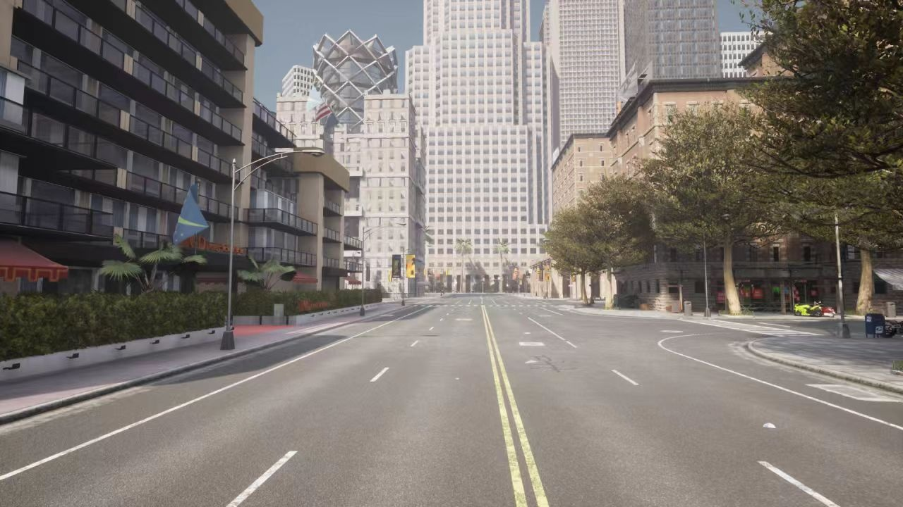
Canny 边缘
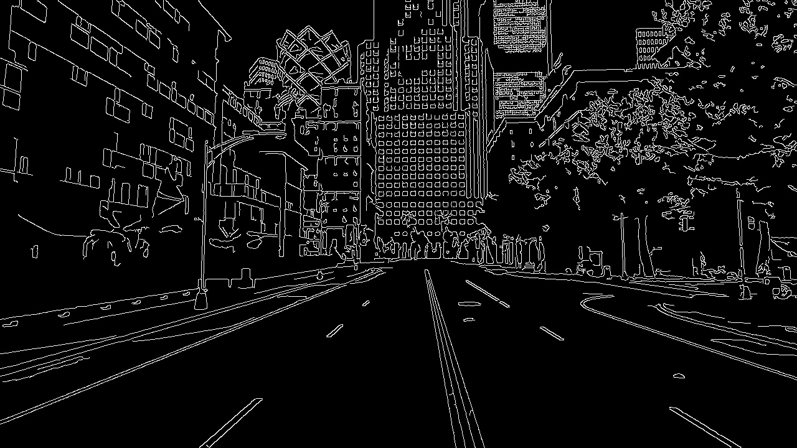
ROI 区域
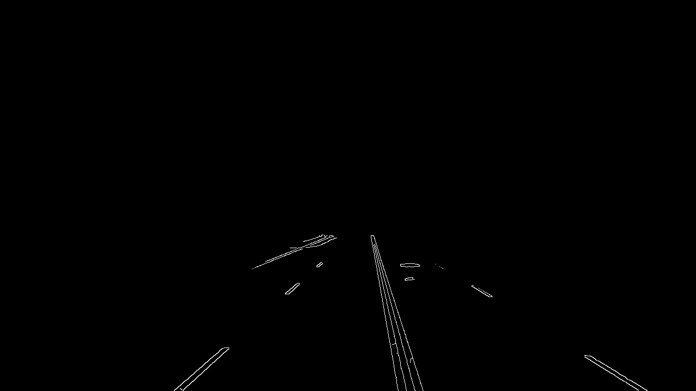
霍夫直线叠加结果
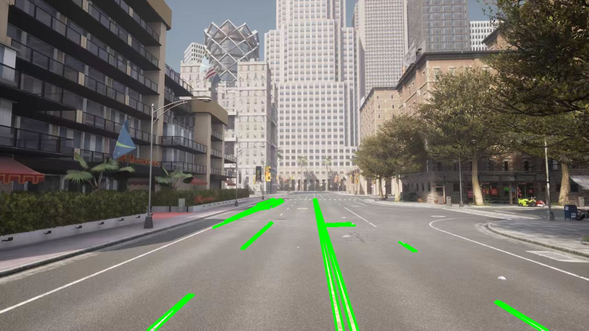
步骤2：HSV 预处理优化
在 HSV 空间分别提取黄色（双黄线）与白色（车道线）掩膜，以双黄线为界划分左右车道并拟合绘制。
输入原图

黄色车道线掩膜
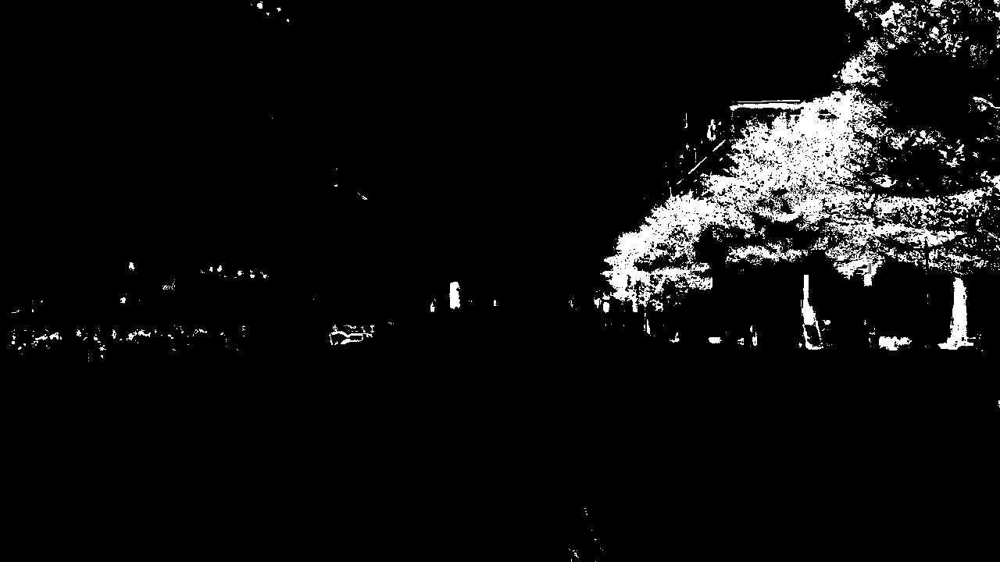
白色车道线掩膜
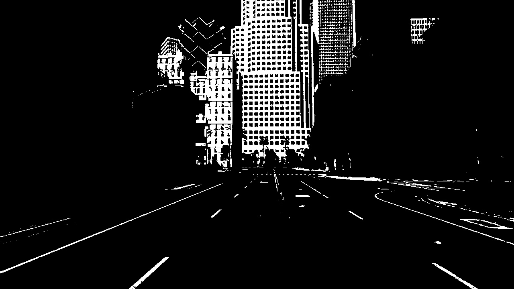
多车道拟合结果
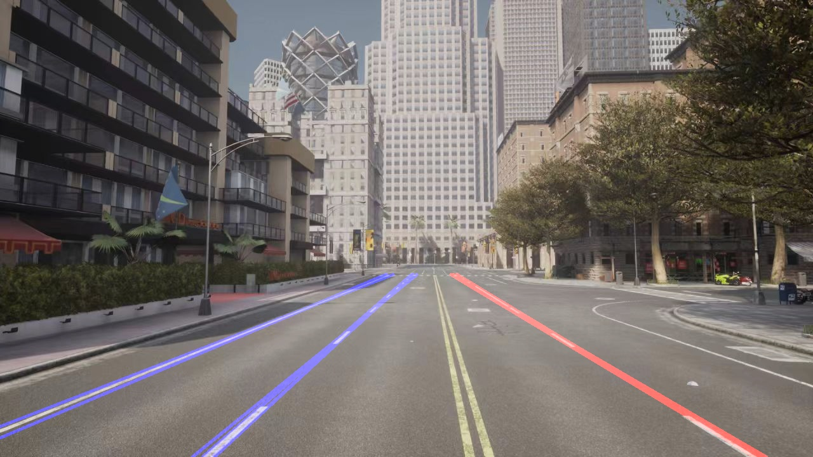
步骤3：透视变换 + 滑动窗口 + 多项式拟合
在 HSV + Sobel 梯度联合二值化的基础上，通过透视变换获取鸟瞰图，利用直方图定位车道线基点，滑动窗口搜索车道像素，最后使用二次多项式拟合弯道曲线并反透视叠加回原图。
HSV + Sobel 二值化车道线
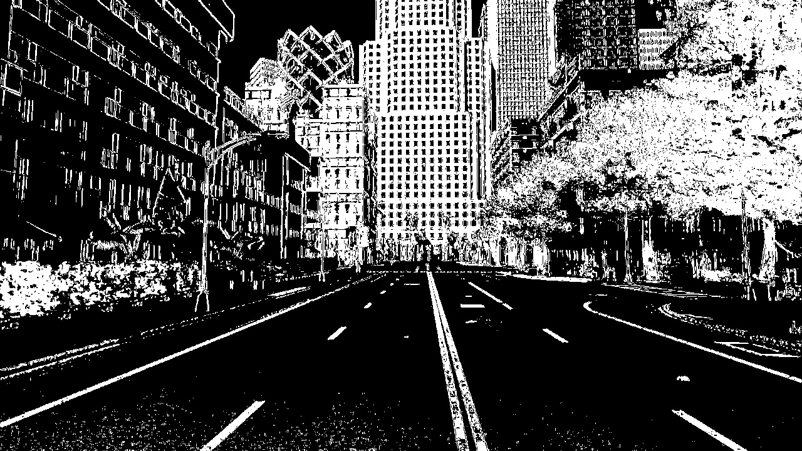
鸟瞰图透视变换
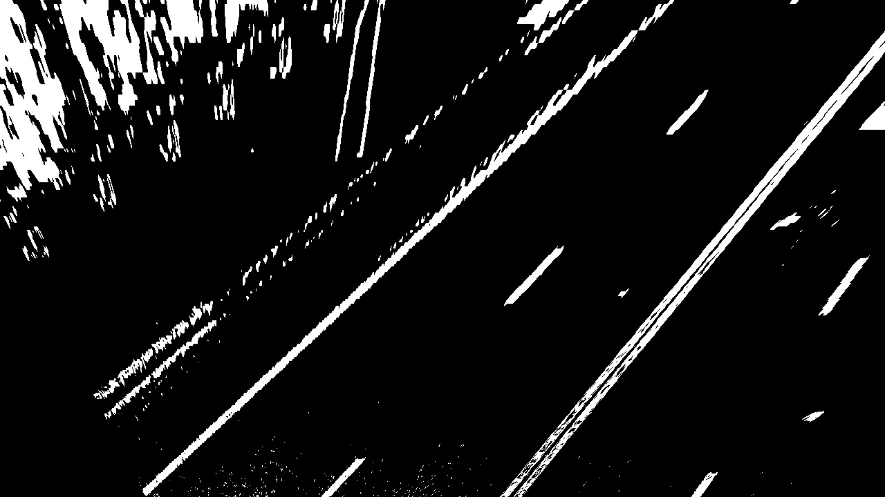
滑动窗口搜索
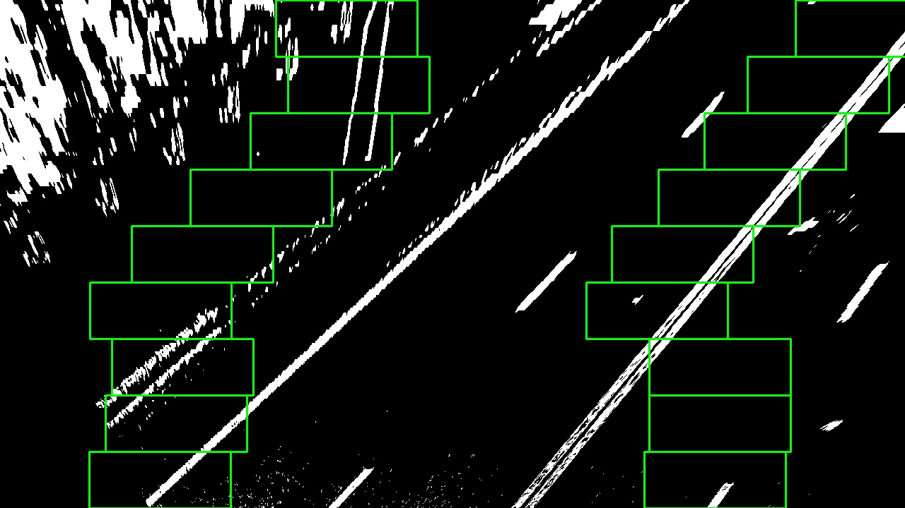
二次多项式拟合结果
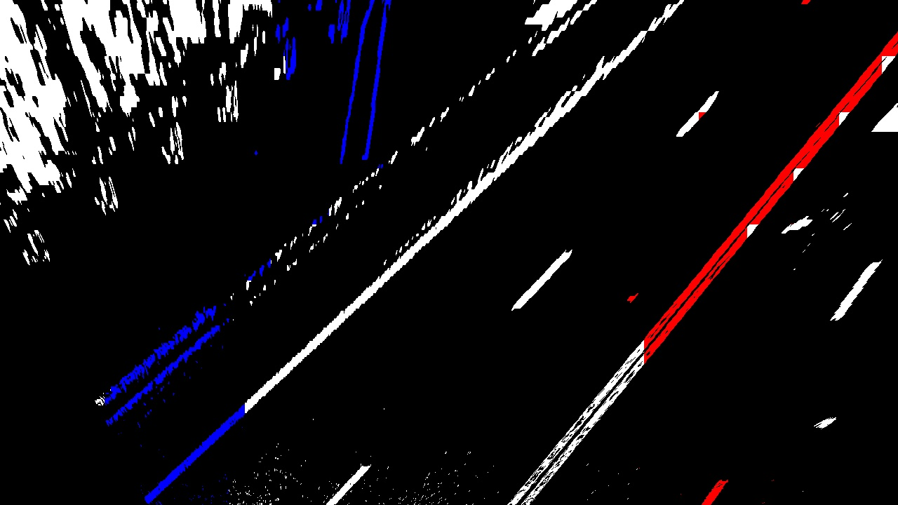
最终检测结果
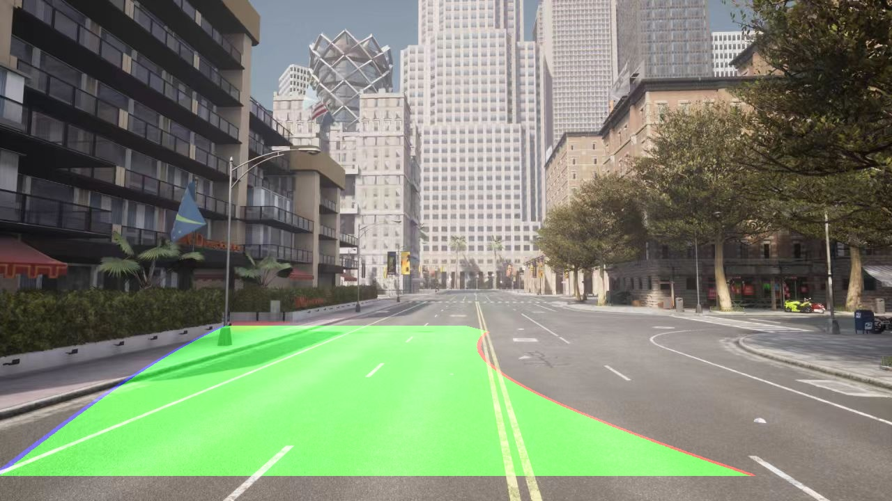
参考
- OpenHUTB/nn 贡献指南
- carla_CAM 模块文档（文档与 mkdocs 约定示例）